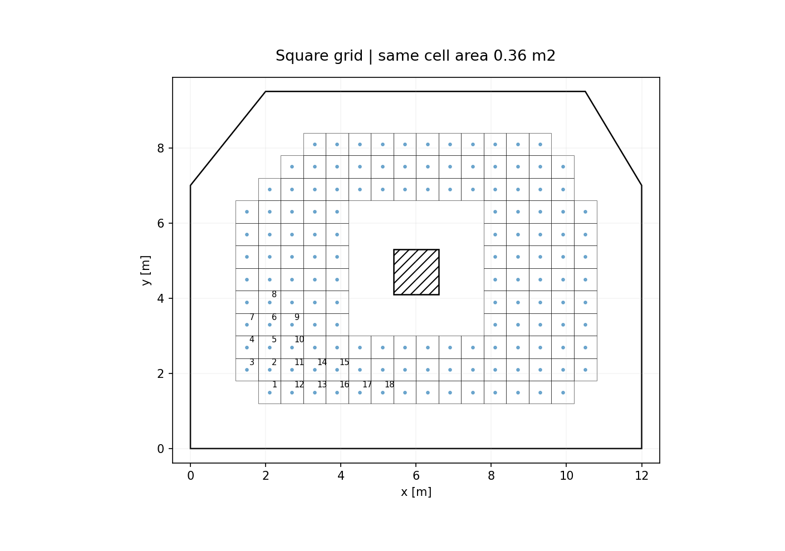
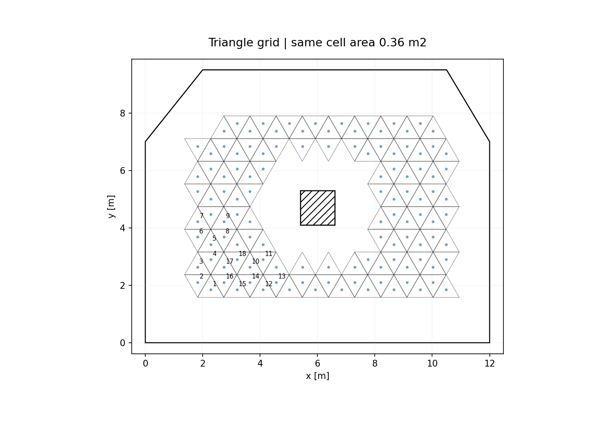
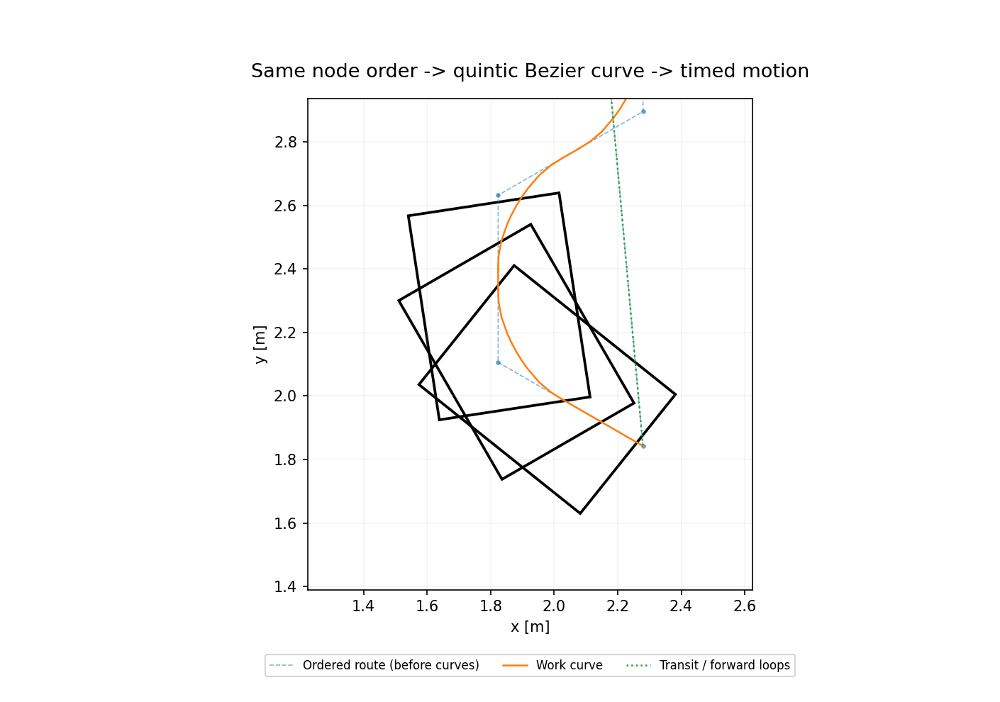
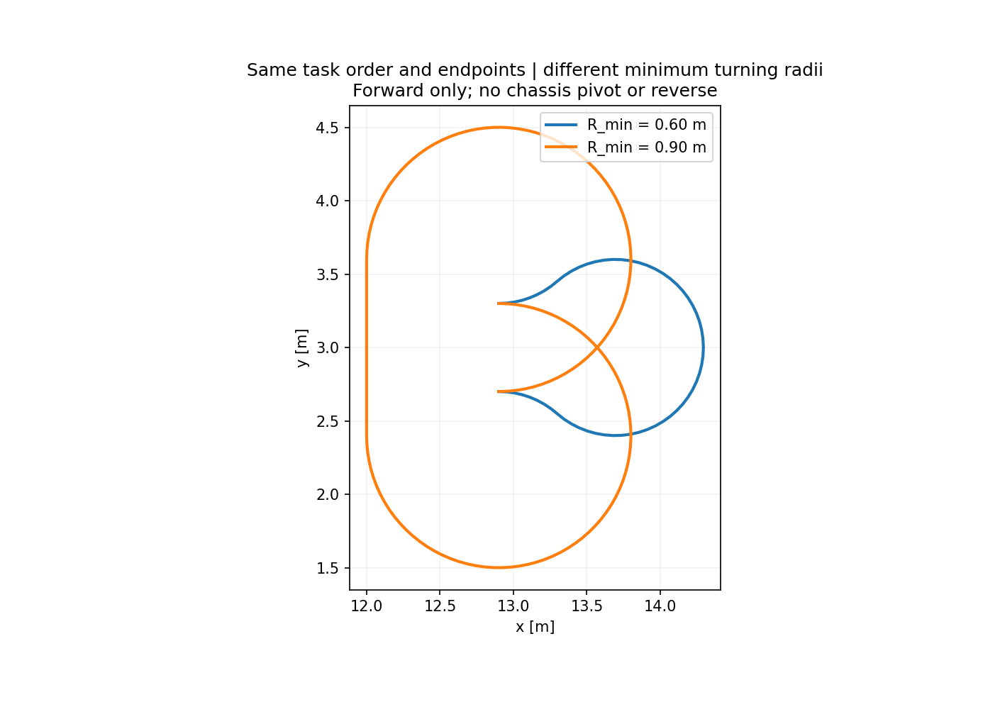

田块 → 任务网格
相同地图与单元面积，分别建立方格和三角格。保留障碍、边界及排除区域。
先确定覆盖任务及访问顺序，再把这条任务路线转换成机器人可用的参考轨迹。网格表示、排序算法和车辆转弯能力共同决定最终的长度、重复访问、作业面积与模拟任务时间。
相同地图与单元面积，分别建立方格和三角格。保留障碍、边界及排除区域。
比较 Greedy、MST–Euler、GA / 2-opt；保留必要回访，连接成安全折线。
Bézier / 圆弧平滑，无法直接转弯时向前回环；再施加时间与运动约束。
六组核心实验固定田块、障碍、研究车辆、单元面积 0.36 m²、任务区内退 1.60 m、随机种子 7 和轨迹策略。改变网格或簇内排序方法，不改变车辆约束。任务区以外的面积仍计入原始田块残留。
| 网格 / 算法 | 目标数 | 计划访问次数 | 原始折线 / m | 约束曲线 / m | 模拟时间 / min | 任务区面积覆盖 | 原地旋转 |
|---|
点击表格中的算法，查看该行的真实访问顺序和曲线。数字来自单地图、单种子实验，不代表普遍排名或统计显著性。
下载完整对比 CSV

切换“网格、顺序、曲线”只改变显示层，不会偷偷换用另一条规划路线。播放使用保存的解析曲线与时间剖面，网页没有另算一条看起来更顺滑的路线。
这里列出规划中的目标顺序，不是搜索算法的展开顺序，也不是割刀首次接触目标的时间。曲线模式按工具扫掠完成目标；车体中心不必逐个穿过被平滑的折角。点击一行可定位图中的序号标注。
下载当前案例 CSV| 访问序号 | 节点 ID | x / m | y / m | 访问次数 | 说明 |
|---|
当访问顺序出现“到达某节点后沿原方向返回”，仅把普通折角磨圆是不够的。新展示模式从当前位姿出发，沿满足半径的向前曲线绕行，回到所需位置与航向，再继续后续访问。
三段圆弧完成180°航向变化。视频保留整个回环，不只截取一个好看的圆角；车体向前运动，无倒车、无原地旋转。
下载视频固定覆盖访问顺序，依据最小转弯半径构造跨行连接；曲率跳变处停止并有限速转舵，车体不原地转身。
下载视频

| 轨迹 / 时间方案 | 原始折线 / m | 曲线路径 / m | 模拟时间 / s | 任务区面积覆盖 |
|---|
| 前进车辆 | 相同原始路线 / m | 曲线长度 / m | 模拟时间 / s | 原地转向 / 倒车 |
|---|
车辆尺寸、轮距、轴距及动态限制为研究参数，不对应真实品牌的性能标定。差速案例与前进车辆案例不可当作同一场景下的品牌优劣比较。
独立复验包含：原始目标服务、完整车体保守碰撞包络、最小半径、线速度与航向导数、加速度、jerk、横向加速度和转舵速率。另检查每个事件接缝的位置与航向连续，以及前进运动方程。网页回放再与 Python 求值结果做数值对照。
查看本版测试与能力边界下载结果校验清单动画按解析曲线回放，尚未模拟定位误差、反馈控制、打滑、质量、牵引与驱动力矩；不能据此声称真实车辆已经跟踪成功。
保留访问顺序做局部曲线转换。各基本运动段起止静止，必要时停车转舵；没有实现全程非零速度、全局时间最优或完整 SE(2) 搜索。
所有必访目标均需服务；同时保留人工内退区和未扫面积。报告不会把“目标完成100%”写成“整块田地覆盖100%”。
本页在已计算案例间切换。改地图、半径或车辆参数，应在 Python GUI 中重新规划与验证，再导出网页数据。